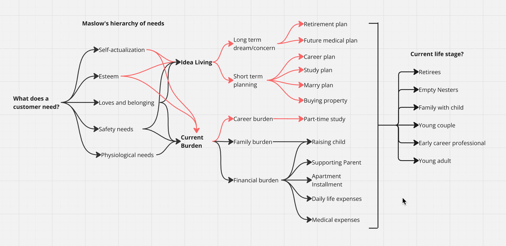

Ellen Timothy Wong
Ellen Timothy WongUnlocking insurance insights: how understanding customers’ life stages drives product design
My Tasks: Market Survey, Data analysis, Data Visualisation

Project Background
The Mandatory Provident Fund (MPF) products play an important role for employees in Hong Kong. However, conducting a marketing survey to capture the varied needs of public users across different life stages presents challenges, including heavy resource and time costs. This complexity arises from the diverse population and regulatory constraints in the region.
To address this issue, we leveraged our existing MPF client base (contribution accounts and preserved accounts) as a representative sample of the current Hong Kong employee market. By analysing the living challenges and financial priorities of our MPF clients, we sought to anticipate the potential needs of the broader workforce in Hong Kong.
My Role
UX and Data Analyst, my responsibilities included:
- Market survey design with the compliance team.
- eDM design and conduct survey form UAT
- Mapping and analysing the feedback data to uncover meaningful patterns.
- Presenting actionable insights to inform the potential needs of different customer groups.
Objective & Challenge
We aim to leverage a research-driven, customer-centred approach that can facilitate our product design team to better understand customer’s potential desires and design offerings to align with their requirements in changing across time.
While our project's primary focus was not on selling insurance products to our MPF clients, we took carefully to comply with local regulations during the survey design and the outreach to interviewees.
Research Methodology
Market Survey — Target Audience
- Age: 18–70 years old
- Family Status: All family types
- Account Types: MPF Contribution Account and Preserved Account
- Income Levels: Above HKD 8,000/month
- Consent: Signed agreement for direct marketing outreach
- Survey Size: 15,000 clients were approached with a target sample size of 375 respondents, ensuring a confidence level of 95% and a margin of error of 5%.
Survey Framework
The survey questions covered:
- Current living challenges clients face in their daily lives.
- Their retirement expectations included ideal retirement age, lifestyle, and financial preparedness.
- Important responsibilities, priorities and goals at their current life stage.
- Clients’ attitudes toward risk, financial planning, and spending habits.
- Information preferences of clients that they would like to receive (e.g., financial advice, retirement planning tips, cultural news, health information, etc).
Results
We had collected over 1000 responses. The survey results revealed that the distribution of responses closely mirrored the demographics of our broader MPF client base, with a 90% match in age group representation.
Referring to the data, I identified six distinct client segments based on life stage:
- Young Adults: Individuals aged 18–25, are early-stage employees starting their careers.
- Early Career Professionals: Individuals in their mid-20s to early 30s, focused on career professional growth.
- Young Couples: Individuals aged 25–35 who are building financial stability with partners. This group overlaps slightly with “Early Career Professionals”.
- Families with Children: Individuals aged 35–55 who managed family expenses, parent medical expenses and childcare needs.
- Empty Nesters: Individuals aged 55–65 are parents whose children have grown up and left home.
- Retirees: Individuals aged 45–65 or above focused on managing post-retirement finances. Some individuals are early retirees, considered extreme cases.
Key Findings & Insights
Due to confidentiality issues, detailed findings could not be disclosed. However, one notable insight that can benefit the public is as follows:
Clients Aged 40–55 Face a Critical Burden: Parental Medical Expenses. This burden arises from a combination of factors (unvalidated):
- High costs associated with local private medical treatments.
- High insurance premiums for the elderly.
- Their parent might lack insurance purchased during their younger years.
- Rising incidence of critical illnesses among the older generation in recent years.
A 40–55 age group represents a pivotal life stage. They might face either the next career peak or going downhill of their career. But definitely, their financial responsibilities are often higher than the other age groups. The burden came from their immediate family, including supporting ageing parents and raising children.
Reflection and Improvement
This is my first time to work with the compliance team of MPF. Throughout the discussion with them and my study on the regulation, there are many account types which related to retirement:
- Contribution account – generic MPF, governed by MPF regulations, with fixed mandatory contribution rates by employee and employer, as well as straight withdrawal rules.
- Preserved account – employee and employer no longer contribute, and the account holds the previous savings. It might generate administrative costs.
- Special voluntary contribution account (SVC) – for direct voluntary contributions outside of employer-employee arrangements, aligned by employer-employee agreement.
- Tax deductible voluntary contribution account (TVC) – available to current MPF scheme members or MPF-exempted ORSO scheme members.
Compared to users of TVC and SVC accounts, those with generic MPF accounts tend to be less focused on saving money within their accounts. However, they express significant concern about their future retirement living. I believe this is a valuable topic for research to explore this gap and understand the reasons behind it — and to develop a series of solutions to address the issues and enhance user awareness regarding financial planning.
For my statistics skills, I was staying at the junior level. Although the result findings were concreted and the distribution of the responses was similar to the client base, I failed to conduct the Chi-Square Test to compare the basic age distribution and gender between the sample and the existing client base, which could have ensured the accuracy of the result. I hope this experience will remind me that I have to think through the end-to-end validation workflow while designing the survey in the future.
